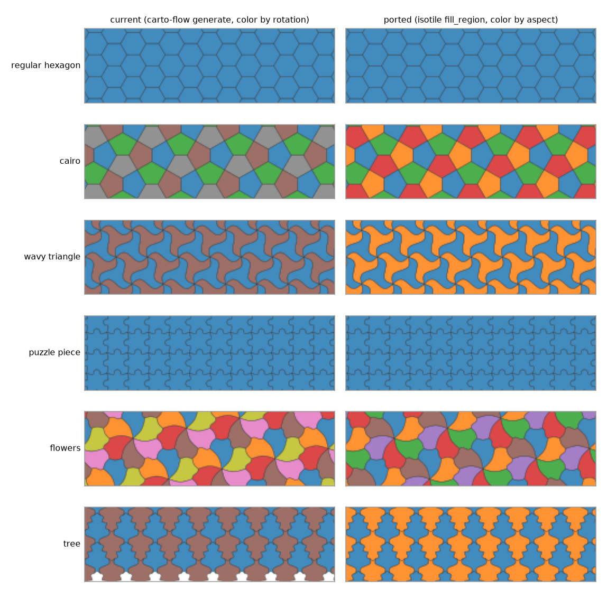
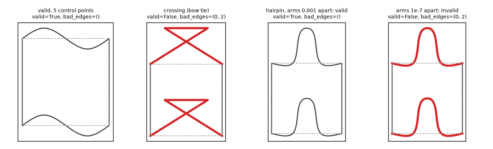

Design of phase 4 of the isotile plan, in which the Panel/Bokeh GUI isohedral-tiling-ui (4,517 lines, 12 modules) drops carto-flow and tactile for isotile. The page inventories every use of carto-flow, tactile and private attributes per module with the isotile replacement (checked against the API), designs the state model (an immutable Draft with a validity report, an EditorModel with history, proof of concept with 12 passing tests), measures the cost of each isotile call per interaction, shows that the port reproduces the preview tile for tile (window tile sets equal in 95 of 96 cases, the exception is a case where the current call leaves 5 percent of the window uncovered), designs the validity feedback and the I-edge, hairpin and fold-back rules, lists the gaps in isotile (none required; one documentation fix and six optional additions), drafts and runs the Python snippet, tests old GUI files and the SVG and GeoJSON exports, plans the tests, the dependencies, the Hugging Face deployment and the repository placement, and ends with a PR split, the risks, what was not verified and the decisions with a recommendation each.
Phase 4 of the plan in proposal-isohedral-tiling-library (section 8.3) and sections 2.3 and 2.4 of proposal-isotile-adoption say that the GUI isohedral-tiling-ui moves from carto-flow's tactile-based tilings to isotile. This page does not implement it. It fixes what is replaced, what the state of the editor looks like, how the editor behaves when the curves become invalid, what isotile still lacks, how the result is tested and deployed, and in which PRs it lands. The GUI repository, the isotile source and the carto-flow checkout were not modified. Every number marked as measured was produced by a script in this directory.
Files in this directory:
| File | Content |
|---|---|
| inventory.sh, inventory.txt | every use of carto-flow, tactile and private attributes in the GUI, by line (section 1) |
| api_checks.py, api_checks.txt | each isotile API claim of section 1 as a printed line: vertices, edge_outlines, info, safe_ranges, I-edge errors, with_edge_curves, io, spline |
| editor_model.py, test_editor_model.py | proof of concept of the state layer (Draft, EditorModel, curve edit operations, slider_limits, Python snippet); 12 tests (sections 2, 3, 6) |
| perf_events.py, perf_events.txt | cost of each isotile call per interaction (section 2.4) |
| with_frame_cost.py, with_frame_cost.txt | re-validation inside with_frame and fill_region (sections 2.4, 4) |
| preview_cost.py, preview_cost.txt | curved against straight tile selection for the preview and the exports (sections 2.4, 4) |
| golden_preview.py, golden_preview.txt, tree_window.py, tree_window.txt | old generate against fill_region for the 81 types and the 15 presets (section 2.6) |
| preview_render.py, preview_render.txt, make_figures.py | ported render of the preview strip against the current one, pixel comparison, the two figures (section 2.6) |
| headless_old_gui.py, headless_old_gui.txt | the current GUI driven without a browser: callbacks, timings, invalid input (sections 2, 3, 6) |
| validity_ui.py, validity_ui.txt | how often the editor inputs give an invalid prototile, repair strategies, hairpin and fold-back cases (section 3) |
| slider_limits.py, slider_limits.txt | slider limits from the current state against safe_ranges (sections 3, 4) |
| symmetry_compare.py, symmetry_compare.txt, ui_curve_ops_examples.py, ui_curve_ops_examples.txt | the GUI's symmetry rule and node operations against isotile (sections 2.2, 2.3) |
| formats_exports.py, formats_exports.txt, snippet_example.py | the Python snippet, old GUI files read by isotile, SVG and GeoJSON (section 5) |
| editor_needs.py, editor_needs.txt | hit testing, rotation and offset of the preview, number of colors, mutability (section 4) |
| deps_measure.sh, deps_measure.txt | installed size of the GUI today and after the port (section 7) |
Commands (a scratch venv; the three source trees are not modified):
S=<scratch directory>
git -C /home/fakl/isohedral-tiling-ui archive eb7b79e | tar -x -C $S/gui
git -C /home/fakl/isotile archive origin/main | tar -x -C $S/isotile
uv venv --python 3.12 $S/venv
uv pip install --python $S/venv/bin/python -e $S/isotile -e /home/fakl/carto-flow panel bokeh svgwrite matplotlib shapely pytest
GUI_SRC=$S/gui/src $S/venv/bin/python api_checks.py > api_checks.txt # the other scripts the same way
$S/venv/bin/python -m pytest test_editor_model.py -q
GUI=$S/gui bash deps_measure.sh > deps_measure.txt| Question | Result |
|---|---|
| What does the GUI use from carto-flow and tactile? | 8 of the 12 modules, 14 import sites (one of them the text of the snippet), 24 accesses to private attributes (_ih, _edge_curves, _edge_curve_modes, _unit_tile, _type) and the tactile functions mul and Point. Section 2.3 of the adoption page missed _unit_tile (gallery, state), the tactile EdgeShape enum in curve_editor.py (3 places) and utils/symmetry.py, and the load path. Every use has an isotile replacement in the public API (section 1). |
| Does the port draw the same preview? | Yes, tile for tile. For the 81 types at their defaults and the 15 presets, the tiles that overlap the visible window are the same set in 95 of 96 cases; polygons differ by at most 8e-15 of a tile area (1.6e-4 for a curve of 11 control points, sampled with 100 points by carto-flow and 110 by isotile). The exception is the tree preset: the current call leaves 5 percent of the window uncovered, fill_region covers it (figure 1). In the uniform color mode the PNGs differ in a median of 0.00 percent of the pixels. |
| What changes for the user? | Four visible changes: the color by aspect (isotile colors by aspect index, the GUI by rotation; 50 percent of the pixels differ in that mode), the index color mode (tile order differs), invalid edits (the GUI accepts them silently today, the port refuses them with a message) and a bug fix: after a preset or file with linear curves is loaded, the current preview draws them as splines (state._tiling is rebuilt without the modes, headless_old_gui.txt item 6). |
| Is the state model feasible with immutable objects? | Yes. IsohedralTiling raises for an invalid prototile, so the editor holds a Draft (type, parameters, curves, modes; frozen, hashable, may be invalid) and derives the report (check_prototile) and the tiling from it. The proof of concept replaces the 25 param fields and the _batching flag (read in 15 places) of TilingState; history entries are drafts; 12 tests run in 1.5 s without Panel. |
| How often is an edit invalid? | 3.0 percent of the slider positions (390 of 12,928), 0.3 to 0.7 percent of vertex drags from random valid states, 6.7 percent of random node moves on the 9 presets with curves, 1.1 percent of the applications of the editor's own curve presets (27 of 2,363). The current GUI accepts all of them without a message. |
| What does it cost per interaction? | check_prototile 0.16 ms for a straight type, 1.1 ms median and 7 ms at most for the presets; constructor 2 to 7 ms for curved presets; fill_region with the default curved selection 84 ms median (155 ms at most) at the preview size, 3.9 ms with outline="straight". The straight selection missed no tile of the window in 146 curved cases at the preview margins 0.25 and 0.1 and none in the three export sizes (section 2.4). The full preview render falls from a median of 151 ms (current) to 29 ms. |
| Which isotile changes are needed? | None is required. One documentation fix (a wrong default margin in docs/curves.md) and six optional additions, each small (section 4). |
| Old GUI files | 792 files (the 81 types, the 15 presets and 300 random edited designs, each in the two JSON forms the GUI writes) were read by isotile.from_dict: 751 read, 41 rejected for an invalid outline (all among the random curves), no other error. Three kinds of file that the old GUI can write are rejected by isotile (a mode for a shape id without a curve, a parameter list of the wrong length, a curve on an I edge); the loader of the port repairs them (section 5.2). The export dialog JSON never contains the modes: 199 of the files lose a linear mode. |
| Dependencies and Space | Installed size 920 MB, 52 packages today (carto-flow with numba, llvmlite, pyarrow, geopandas, pyogrio, pyproj, pyfftw, joblib, cloudpickle, tactile); 418 MB, 41 packages after the port. isotile installs from a GitHub archive URL pinned to a commit, without git in the image; hatchling needs allow-direct-references = true (verified in a venv). |
| Where does the GUI live? | Recommendation: stay in isohedral-tiling-ui (section 7.5). |
| PR split | Four PRs in the GUI repository: CI baseline and golden fixtures from the current implementation, the port, validity feedback, deployment; plus one optional small isotile PR (section 8). |
The GUI at eb7b79e has 4,517 lines in 12 modules (inventory.txt): state.py 431, app.py 92, components/curve_editor.py 1,183, prototile_editor.py 1,223, preview_strip.py 619, load_save.py 175, type_selector.py 165, history_toolbar.py 125, gallery.py 103, utils/symmetry.py 242, utils/spline_cache.py 73, and 86 lines in the __init__ files. tests/ holds only __init__.py. Eight modules import carto-flow or tactile: state.py, gallery.py, load_save.py, type_selector.py, preview_strip.py (the text of the snippet), prototile_editor.py, curve_editor.py, utils/symmetry.py. app.py and history_toolbar.py only read the type_info dict.
The right column is checked in api_checks.txt unless another measurement is named.
| Module and lines | Use today | isotile replacement and check |
|---|---|---|
state.py 9, 76 | IsohedralTiling of carto-flow as the type of _tiling | the tiling becomes a value derived from the Draft (section 2.1) |
state.py 101, 282; gallery.py 23, 27 | IsohedralTiling.from_preset(name), list_presets() | IsohedralTiling.from_preset(name), isotile.list_presets(); the 15 names equal carto-flow's |
state.py 102, 135, 285; gallery.py 29 | tiling._type | tiling.type.number |
state.py 103, 115, 249, 286, 298; type_selector.py 140 | tiling._ih.parameters (private tactile object) | tiling.parameters (ndarray) or get_type(n).default_params; vertex positions are identical (largest difference 2.2e-16 over the 81 types) |
state.py 104, 116, 250, 287, 299 | tiling._edge_curves | tiling.edge_curves returns the curves with the symmetry enforced. The editor keeps its own full curves in the Draft; the tiling is only the validated result |
state.py 105, 288 | tiling._edge_curve_modes | tiling.edge_curve_modes (only the ids that have a curve) |
state.py 107, 146, 269, 291; load_save.py 112; history_toolbar.py 51 to 58 | tiling.type_info() | tiling.info() or get_type(n).info(). No key of carto-flow's dict is missing in isotile's (81 of 81 types), affected_vertices are equal at 3 decimals for all 128 parameters, all 128 parameter descriptions and the edge descriptions of all 81 types are equal. isotile adds parameter_values |
state.py 139, 189, 218, 233; type_selector.py 46 | IsohedralTiling.type_info(n) (class level) and the default of each parameter | get_type(n).info() (cache it per type, 0.03 ms per call) and get_type(n).default_params |
state.py 145 | IsohedralTiling(type, parameters, edge_curves) without the modes | Draft.tiling(); the modes are passed. The constructor raises ValueError for an invalid prototile; tactile accepted any parameters |
state.py 182, 203 | self._tiling._edge_curves = ... and _edge_curve_modes = ... (mutation of a private attribute) | removed: a new Draft and a new tiling replace the object |
state.py 258; gallery.py 81 | tiling._unit_tile.exterior.coords (unit-area tile centered at the curved centroid) | tiling.prototile(normalized=True); it centers at the straight centroid, which only shifts the icon, because the icons are scaled to their span |
type_selector.py 34 | find_types(num_vertices, num_parameters, has_customizable_edges) | isotile.find_types with the same keywords; the result is equal for the filter combination checked |
type_selector.py 134 | IsohedralTiling(tiling_type) to read its parameters | get_type(n).default_params |
load_save.py 97 to 144, 146 to 157 | the loader builds a tiling to get the info; _save_config writes the dict by hand (version 1.0, with modes, description, metadata) | loader: Draft.from_dict (section 5.2); writer: tiling.to_dict() (version 1.1) plus description and metadata |
preview_strip.py 311 | tiling.generate(bounds=(-1, -0.3, 1, 0.3), n_tiles=100, margin=0.25, compute_adjacency=False) | tiling.fill_region((-1, -0.3, 1, 0.3), n_tiles=100, margin=0.25, outline="straight") (sections 2.4, 2.6) |
preview_strip.py 491, 526, 572 | the same call for SVG, PNG, GeoJSON with bounds=(-2, -2, 2, 2) and the grid size; the default margin of generate is 0.1 | fill_region(..., margin=0.1): the default of fill_region is 0.0, so the margin must be passed |
preview_strip.py 272 to 292, 332 to 336, 504, 537, 586 | color by transform.rotation % 360 and by tile index; poly.exterior.xy; tr.rotation, tr.flipped, tr.center | TileSet.aspect (the number of distinct (rotation, flip) values equals n_aspects in 96 of 96 cases), TileSet.colors() (2 or 3 colors for every type), TileSet.outlines() (numpy, no shapely) |
preview_strip.py 431 to 446 | text of the snippet, names carto-flow | rewritten for isotile (section 5.1) |
prototile_editor.py 573, 1032 | [(v.x, v.y) for v in tiling._ih.vertices] | tiling.vertices |
prototile_editor.py 909 to 955 | tiling._ih.shapes, shape_info.T, .rev, .id, tactile.mul to place each edge curve | tiling.edge_outlines(): one polyline per edge in edge order, already reversed where needed. Equal to the GUI's lines for the 15 presets (largest difference 2.2e-16). tiling.edges[i] gives shape_id, shape, reversed, curve |
prototile_editor.py 813 to 902, 1049 to 1090 | parameter groups and least squares from info()["parameters"][i]["affected_vertices"] (dx_dp, dy_dp, rounded to 4 decimals by info) | unchanged; the exact derivative is get_type(n).vertex_coeffs[:, :, k] (public attribute), which removes the rounding |
prototile_editor.py 1140 | sliders fixed at 0 to 1, step 0.01 | limits from the current state (section 3.4) |
curve_editor.py 597 to 604, 612 to 628, 1158 to 1171 | tactile.EdgeShape and a dict {"J": EdgeShape.J, ...} before every call of the GUI's enforce_curve_symmetry | isotile.enforce_symmetry(points, "S") takes the shape letter; the three dicts disappear |
utils/symmetry.py 28 to 99 | own symmetry rule on tactile EdgeShape | isotile.enforce_symmetry. Same result on the curves the editor stores for J, U with midpoint and S (1,500 of 1,500 random curves, symmetry_compare.txt); differences in section 2.3 |
utils/symmetry.py 125 to 175 | interpolate_curve (unused), get_curve_preset, list_curve_presets | interpolate_curve is deleted; the 17 curve presets stay (isotile has 5 presets of 21 control points, too many nodes to drag) |
utils/spline_cache.py | lru_cache over a parametric spline, max(100, 10 m) points | isotile.interpolate(points, "spline"): largest difference 2.2e-16 over 120 random curves of 3 to 21 control points; 0.24 ms per call against 0.39 ms for the GUI's uncached version. The module is deleted |
curve_editor.py 960; app.py | pandas (Tabulator), panel, bokeh, param | unchanged |
Corrections and additions to section 2.3 of the adoption page:
_unit_tile in gallery.py 81 and state.py 258; tactile.EdgeShape in curve_editor.py and utils/symmetry.py; the loader load_save.py 97 to 144 (listed as load and save only).check_prototile returns the offending edges (1.1 ms median and 7.1 ms at most over the 15 presets, 1.6 ms median over 72 types with a curve); safe_ranges is infinite at 138 of 256 ends (55 types have parameters, 128 parameters in all); from_dict reads GUI files of version 1.0 and ignores description and metadata.safe_ranges is a slice through the defaults. At random valid states its clipped value equals the true valid interval in 352 of 512 cases; an interval computed from the current state is right in 627 of 640 and costs 3.7 ms (section 3.4).from_dict also rejects files that the old GUI writes (section 5.2), and with_edge_curves(curves) without modes resets all modes to spline (verified); the editor must pass the modes.edge_curves to the constructor without the modes" is true for the tiling that the preview draws, not for the state: state.edge_curve_modes is set directly, and state._tiling is rebuilt without them in _update_tiling (state.py 145), because the mode watcher returns early inside batch_update. The result is the bug in the results table.print calls ("DEBUG"), unused code (_schedule_async_update, _build_curve_mode_widget, _add_point, _solve_param_delta, interpolate_curve, _build_settings_column, _build_export_column), and a block in PrototileEditor._update_figure that builds the draggable and fixed sources twice (lines 607 and 653). All go in PR 2 (section 8).TilingState today (state.py, 431 lines) is a param.Parameterized with 25 fields. The components register 26 watchers on them (19 watch calls and 7 watch=True decorators), and a _batching flag (read in 15 places) suppresses the watchers while several fields are set together. What the fields hold, and where each goes:
| Field today | Role | In the port |
|---|---|---|
tiling_type, parameters, edge_curves, edge_curve_modes | the design | one frozen Draft |
_tiling (carto-flow, mutable) | the object the preview draws | draft.tiling(), derived and cached by draft; an isotile.IsohedralTiling that cannot be invalid |
_type_info | dict for the parameter table, the selectors, the toolbar | get_type(n).info(), cached per type |
parameters_version, _reset_ranges | counters and flags to make watchers refire | removed; a component redraws when the Draft object changes; the axis reset is a flag of the editor figure, set by load and type change |
_initial_parameters, _initial_edge_curves, _initial_preset_name, _initial_prototile_svg | target of Reset and the reference tile | baseline (a Draft) and its label; the SVG is computed from baseline.tiling().prototile(normalized=True) and cached |
_history, _history_idx, the coalescing attributes | undo and redo | EditorModel history: entries (label, draft, time, key) |
reset_available | enable Reset | draft != baseline |
current_preset | file name of the downloads | source_label of the model |
active_curve_id, active_param_idx (and selected_point_idx of the curve editor) | selection | selection state of the views, outside the history (the old snapshots stored active_curve_id, so Undo changed the selected curve) |
grid_size, face_color_mode, face_color, face_colormap, edge_color | preview settings | a small ViewSettings parameterized object; not in the history |
_batching, _pending_update, _schedule_async_update, _do_async_update | batching; an unused debounce | removed |
editor_model.py is the proof of concept of the logic layer. It imports only isotile and numpy:
Draft(type_number, parameters, curves, modes): frozen, hashable. Draft.report() is check_prototile (cached by draft); Draft.tiling() builds the IsohedralTiling (cached; raises ValueError if invalid); Draft.from_dict reads saved designs.EditorModel: current draft, baseline, history. probe(draft) evaluates without committing; commit(label, draft, key, window) commits only a valid draft, coalesces an entry with the same key within window seconds (the GUI uses 0.5 s for node drags and 1.0 s for sliders), and returns Result(committed, report).param.Parameterized adapter with a single draft parameter and the report. Every component depends on state.draft only, so one commit fires one event and batch_update is not needed.The cached tilings are shared by all browser sessions of the process (Panel serves sessions from threads). IsohedralTiling has a public parameters setter that mutates the object in place (verified in editor_needs.txt); the port must not call it, and section 4 proposes with_parameters as the immutable alternative.
| Edit | Today | Port |
|---|---|---|
move a curve node (drag release, curve_editor.py 502) | rebuild the full curve, the GUI's enforce_curve_symmetry, set state.edge_curves | Draft.with_curve(sid, enforce_symmetry(curve, shape)), then commit; the check is check_prototile(type, parameters, edge_curves=, edge_curve_modes=) |
table cell X or Y (curve_editor.py 1033 to 1073) | same, U midpoint x fixed at 0.5 | same as a node move; enforce_symmetry fixes the U midpoint at x = 0.5 (the GUI fixes it only if x is already 0.5) |
| add node (double click, 379 to 455) | insert one point, then the GUI's enforcement | insert the node in the first half and a placeholder at the mirrored index, then enforce_symmetry makes the partner (editor_model.add_node) |
| remove node (right click, double click) | pop(i), then the GUI's enforcement | remove the node and its partner (editor_model.remove_node) |
mode radio linear or spline | edge_curve_modes[sid] = mode | Draft.with_mode, then commit (a mode can make a valid curve invalid, section 3.3) |
| apply one of the 17 curve presets, copy from another curve | get_curve_preset, enforcement | apply_curve(sid, curve): enforce_symmetry, commit |
slider (value_throttled) | state.parameters = ... | set_parameter(i, v): Draft.with_parameters, commit |
vertex drag release (prototile_editor.py 975 to 1047) | least squares on the Jacobian, clamp to [0, 1] | unchanged solver, then set_parameters; the Jacobian from vertex_coeffs is exact |
| type selector | IsohedralTiling(n), curves reset, history cleared | load_type(n): new baseline, new history |
| gallery, load file | from_preset; loader | load_preset(name), load_dict(data): new baseline, new history |
| Reset, Undo, Redo | restore snapshots | reset() is a commit of the baseline; undo() and redo() move an index |
Add and remove on S and U curves are where the port fixes the current behavior (ui_curve_ops_examples.txt, symmetry_compare.txt). On the U curve [(0,0), (0.2,0.1), (0.5,0.15), (0.8,0.1), (1,0)] a double click at (0.35, 0.2) gives in the GUI [(0,0), (0.2,0.1), (0.35,0.2), (0.8,0.1), (1,0)]: the middle node is gone and the curve is no longer symmetric about x = 0.5. The reason is that the GUI inserts one point and lets a rule that pairs by index, and treats the last point of the first half as the middle node, rebuild the curve. The port inserts the pair and gets 7 points. In 400 random cases per shape, the GUI's add gives the same curve as the port for J (400 of 400) and in 235 of 400 for S, and never for U; the GUI's remove agrees for J and S (400 of 400) and in 291 of 400 for U with a midpoint. For moves of a node, isotile and the GUI agree for J, U with a midpoint and S (400 of 400 each). For U curves without a midpoint the GUI's enforcement drops a point (0 of 500 equal).
enforce_symmetryOn the curves the editor stores (full curve, S always with the midpoint (0.5, 0), U with or without midpoint), the GUI's rule and isotile.enforce_symmetry return the same curve for J, U with a midpoint and S in 1,500 of 1,500 random cases after a random move of first-half nodes (x above 0.5 included). They differ in three cases: (1) U curve with an even number of points (no midpoint): the GUI drops a point, isotile pairs by index and keeps the count; (2) U midpoint moved in x: isotile forces x = 0.5, the GUI only if it already is 0.5; (3) S curve with an even number of points: the GUI adds the midpoint, isotile keeps the count. In the port the editor creates only the shapes that add_node and remove_node produce, so (1) and (3) cannot occur in the UI; a loaded file with such a curve is enforced by isotile.
Python-side cost of the isotile calls (perf_events.txt, preview_cost.txt, with_frame_cost.txt, preview_render.txt). Cases: the 15 presets (9 have curves), the 81 types at their defaults, and the 72 types (of 81 tried) for which a bump of amplitude 0.08 on every curvable shape id is valid. Median / largest over the cases, in ms:
| Call | Straight types (81) | Presets (15) | Curved types (72) |
|---|---|---|---|
check_prototile(type, params, curves, modes) | 0.16 / 0.18 | 1.05 / 7.1 | 1.6 / 4.5 |
IsohedralTiling(...) constructor (validates again) | 0.34 / 0.50 | 1.6 / 7.5 | 2.3 / 5.4 |
with_edge_curves(curves, modes) | 0.34 / 0.47 | 1.5 / 7.8 | 2.3 / 5.3 |
info() | 0.03 / 0.06 | 0.03 / 0.06 | 0.03 / 0.06 |
edge_outlines() and prototile() | 0.005 / 0.006 | 0.005 / 0.007 | 0.005 / 0.007 |
fill_region 100 tiles, margin 0.25, default selection, plus outlines() | 1.8 / 2.3 | 43 / 94 | 94 / 158 |
fill_region 50, 100, 200 tiles in (-2,-2,2,2), plus outlines() | 1.4 / 1.8 / 2.4 | 22 / 31 / 58 | 56 / 95 / 142 |
enforce_symmetry takes 0.002 to 0.006 ms for 5 to 21 control points (the GUI's rule 0.0005 to 0.004 ms), isotile.interpolate 0.24 ms (the GUI's spline 0.39 ms uncached, 0.0004 to 0.001 ms from its cache).
What is costly:
fill_region selects tiles with the curved outline (outline=None), which clips the 436-point outline of every tile that touches the region boundary; at 100 tiles nearly all do. Over 81 curved cases (9 presets and 72 types with a bump) the median is 84 ms and the maximum 155 ms, against 3.9 ms and 9.8 ms with outline="straight". 68 percent of the time of a call is spent in _overlap_area.with_frame builds a new IsohedralTiling and so runs check_prototile and check_curves again, although validity does not depend on the frame; fill_region calls it once. For the 9 presets with curves the constructor takes a median of 5.7 ms, fill_region(outline="straight") 7.1 ms, and check_curves is 61 percent of the latter.The straight selection is sufficient for the GUI: tiles that reach into the visible window only through their curves lie inside the margin. Compared with the curved selection, the straight one misses no tile of the visible window at the margins 0.25 and 0.1 of the preview (81 curved cases, and 65 more cases with a bump of amplitude 0.3 on every curvable shape id) and none at margin 0.1 for the exports of 50, 100 and 200 tiles in (-2, -2, 2, 2) (both case sets). Without a margin it misses 105 tiles in 15 of 81 cases. The port uses outline="straight" with a margin of at least 0.1 for the preview, and the curved default for the exports, which run once per click.
Per interaction in the port, for a curved preset, in Python: a probe is enforce_symmetry plus check_prototile (1 to 7 ms); a commit is the check, the constructor (2 to 7 ms) and the preview render. The render (selection with outline="straight", outlines, matplotlib, PNG) has a median of 29 ms (largest 100 ms) over the 15 presets, against 151 ms for the current render (generate, shapely polygons, pyplot); with the curved default selection it would be 60 ms. The current GUI in a headless run: the watcher chain of one slider event takes a median of 10 ms and the one of a curve drag release 14 ms in the callbacks, and the preview thread then needs 185 ms for the puzzle_piece preset (headless_old_gui.txt).
When the Python side runs: in BokehJS 3.10.1 (bokeh.js, installed copy) PointDrawTool._pan changes the arrays in place and calls cds.change.emit(), which redraws locally; _pan_end calls _emit_cds_changes(..., emit=true), which sets cds.data and sends it to Python. So _on_curve_change and _on_vertex_change run once per drag, at the release. The live picture during a drag comes from the CustomJS handlers on pan (a linear polyline through the nodes in the curve editor, a Jacobian prediction in the prototile editor). Nothing in isotile is called per mouse event today, and a validity check during the drag needs a probe channel (section 3.2). This was read in the source, not run in a browser.
Draft.report() and Draft.tiling(): lru_cache keyed by the draft (maxsize 256 and 64). A probe that returns to a draft already seen costs a lookup.Figure and FigureCanvasAgg, which does not.get_type(n).info() and the parameter groups (_get_parameter_groups): functools.cache per type number; they are recomputed on every figure update today.golden_preview.txt: for each of the 81 types at the defaults and the 15 presets, the current call generate(bounds=(-1, -0.3, 1, 0.3), n_tiles=100, margin=0.25) against fill_region(..., n_tiles=100, margin=0.25); tiles are matched through the centroid of the polygon.
| Quantity | 15 presets | 81 types |
|---|---|---|
| tile sets that overlap the window are equal | 14 of 15 | 81 of 81 |
| window tiles only in the new set | 9 (the tree preset) | 0 |
| largest polygon difference (symmetric difference, share of a tile area) | 1.55e-4 | 8.2e-15 |
distinct (rotation, flip) values of the window tiles equal to n_aspects | 15 of 15 | 81 of 81 |
| median time of the call, polygons included | 95 ms current, 42 ms new | 49 ms current, 2.4 ms new |
The tree preset (IH4): the current call returns 204 tiles and leaves 4.96e-2 of the window uncovered (tree_window.txt); fill_region returns 126 tiles and leaves 1.5e-17 uncovered, and 122 tiles with 3.9e-17 uncovered with outline="straight". The cause in the old call was not investigated; the old output has gaps, the new one is complete. The polygon difference of 1.55e-4 is the puzzle_piece preset: its curve has 11 control points, carto-flow samples 100 points and isotile max(100, 10 m) = 110. The GUI's own curve editor already draws 110.
The ported render against the current one (preview_render.txt, 15 presets, images of 232 by 69 pixels, equal in size in all cases): in the uniform color mode the median share of pixels that differ by more than 0.05 in intensity is 0.00 percent and the largest 7.5 percent (tree, the uncovered window); in the aspect mode the median is 50 percent, because the new colors are indexed by aspect and the current ones by rotation; in the index and coloring modes 98 percent. With outline="straight" the image is identical to the one of the curved selection in 15 of 15 presets.
The current GUI never checks anything. tactile accepts any parameters, and carto-flow warns once, when the tiling is constructed, if a curve makes the prototile self-intersecting and repairs the tiles with make_valid in generate. In a headless run of the current GUI, parameters of IH30 outside the valid range and a self-crossing curve were both accepted without a message (headless_old_gui.txt item 4). isotile cannot hold an invalid prototile: the constructor, with_edge_curves and the parameters setter raise ValueError, and check_prototile reports instead of raising. How often the editor produces such states (validity_ui.txt):
| Input | Invalid share |
|---|---|
| slider positions, one parameter over 0 to 1 in steps of 0.01 with the others at their defaults (55 types, 128 parameters) | 3.0 percent (390 of 12,928); never inside safe_ranges |
| vertex drag of one parameter by a Gaussian displacement of 0.15 or 0.5 from a random valid state | 0.3 and 0.7 percent (16 and 37 of 5,500 each) |
| the 17 curve presets of the editor on every curvable shape id of every type at the defaults | 1.1 percent (27 of 2,363); scalloped_deep, scalloped_deep_down, s_curve and s_curve_alt 3 to 5 percent, the others at most 2.2 percent |
| a random move of one editable node (sigma 0.12) on the 9 presets with curves | 6.7 percent (121 of 1,800) |
| the same curve in the other mode | valid as a spline and invalid as lines for a curve on IH58, and the reverse for IH1 (examples in the file) |
An invalid node move names a median of 2 shape ids (at most 3). bad_edges are edge indices; every edge with the same shape id has the same curve, so for IH41 a crossing curve on shape id 0 reports edges (0, 2).
Recommendation: show the problem live, commit only valid drafts, revert an invalid release with a message.
| Interaction | During the drag | On release | Invalid at release |
|---|---|---|---|
| node of a curve | JS draws the polyline as today. A throttled probe (at most 8 per second, one in flight, intermediate positions dropped) sends the dragged curve to Python; Python answers with the report; the curve is drawn red in the curve editor, and the edges of that shape id are drawn red in the prototile editor (type.edge_shape_ids[bad_edges]); the status line shows report.message | commit; the preview updates | the node returns to the last valid position; a notification names the curve and the edges; the red display stays 1.5 s |
| vertex of the prototile | JS prediction as today (exact, because vertices are affine in the parameters); the same probe; the bad edges are drawn red | commit of the solved parameters | parameters revert; notification |
| slider | limits from the current state (section 3.4) make the invalid end unreachable; value events probe as above | value_throttled commits | rejected with a message (rare because of the limits) |
| numeric table cell | the cell is validated when it is edited | value applied if valid | the cell shows the old value and the message |
| add or remove node, mode toggle, curve preset, copy from | none | commit | no change; message naming the operation and the edges |
| load file, type, preset | none | new draft, new baseline | file: message, state unchanged (all 81 types and 15 presets are valid) |
| undo, redo, reset | none | moves in the history | cannot occur: the history holds valid drafts only |
Why the probe goes through Python and not JS: the test is exact for the Bezier pieces (subdivision with a clearance of 1e-6 times the diameter), and the straight-polygon test uses tolerances that must agree with check_prototile. A second implementation in JavaScript would disagree near the boundary. The probe costs 1 to 7 ms of Python plus one round trip (local: a few ms; on the Hugging Face Space: the network latency of the user, so the red display lags the pointer by about one round trip). The result at release is authoritative and does not depend on the probe.
Why revert and not allow-and-warn: the preview, the exports, the snippet, Save, the history and Undo all assume a valid tiling. Allow-and-warn needs a second state (a draft without a tiling) in each of them, and an invalid file saved by the GUI would fail to load in isotile. With revert, the only code that sees an invalid draft is the probe and the message. The cost is that a drag cannot pass through an invalid region to a valid one on the other side in one gesture; the user reaches the target in two moves. A variant that slides the node to the boundary of the valid region on release (bisection between the old and the dragged position, 12 steps) found a valid point other than the start in 414 of 414 invalid node moves, at a median of 91 ms and at most 137 ms (validity_ui.txt part F); it is a possible later addition and not needed for PR 2 or 3.
I edges. isotile raises ValueError for a curve on a straight edge (IH14: edge shape id 1 is a straight (I) edge and cannot be curved; check_prototile raises too, verified); 33 of the 81 types have such an edge. carto-flow ignored those curves. The GUI never creates one: the curve selector lists customizable_shape_ids only, and "Copy from" offers curves of the same shape type (or any source for a J target). A curve on an I id can come only from a file edited by hand or written by another program. The loader of the port drops such curves and reports their ids in a notification (Draft.from_dict, section 5.2).
Hairpins and fold-backs (docs/curves.md, "Validity"; figure 2). The outline must be a simple closed curve with positive area, and parts that are not directly consecutive must be at least 1e-6 times the diameter apart. A curve may turn by 180 degrees or more inside one Bezier piece (a hairpin) if its arms keep the clearance; the tangent may not turn by 180 degrees or more at a join between pieces (a fold-back); crossings, loops and cusps that bring two parts within the clearance are rejected. Checked on IH41 (validity_ui.txt part G):
| Curve on shape id 0 | Spline | Lines |
|---|---|---|
| finger with arms 0.1 apart | valid | valid |
| finger with arms 0.001 apart | valid | valid |
| arms 1e-7 apart | invalid, edges (0, 2) | invalid |
[(0,0), (0.6,0), (0.3,0), (1,0)] (turns back on itself at a join) | invalid | invalid, the message names the fold-back |
bow tie [(0,0), (0.8,0.5), (0.2,0.5), (1,0)] | invalid | invalid |
Consequences for the editor: the node count and the node positions need no rule of their own (a hairpin that the user draws is accepted if its arms are apart); validity does not depend on the sampling, so the drawn polyline cannot be invalid when the curve is valid; a mode toggle is an edit that must be checked (a curve valid in one mode and invalid in the other was found for IH58 and IH1); and the red display colors all edges of a shape id, because bad_edges lists both copies.
The sliders run from 0 to 1 (prototile_editor.py 1140), and the vertex drag clamps to the same range. TilingType.safe_ranges is infinite at 138 of its 256 ends, its finite ends lie between -0.154 and 1.056, 33 of the 128 parameters have a safe range that cuts the interval 0 to 1, and it is a slice through the defaults. At random valid states its clipped value equals the true connected valid interval in only 352 of 512 cases (slider_limits.txt). editor_model.slider_limits(draft, k) finds the interval around the current value inside the window from 11 samples and a bisection to 1e-3 using check_prototile: it is within 0.004 of a fine sweep (step 0.002) in 627 of 640 cases (the others are valid islands that the 11 samples step over) at a median of 3.7 ms and at most 20 ms. Recommendation: compute the limits when a slider is grabbed (and after each commit), keep the window 0 to 1, and show the invalid part of the track in the slider style. It needs no isotile change.
None of the following blocks the port. Required means that the port is wrong or the docs mislead without it.
| # | Proposal | Reason and evidence | Required | Size |
|---|---|---|---|---|
| G-1 | Documentation: docs/curves.md says that the curved test returns tiles "also into the margin band at the default margin of 0.1". The default of fill_region is margin=0.0 | the GUI snippet and the exports must pass margin explicitly; carto-flow's generate defaulted to 0.1, so a port that trusts the docs changes the tile set | yes (documentation) | 1 line |
| G-2 | IsohedralTiling.with_parameters(parameters): a new, validated tiling with the same type, curves, modes and frame; self unchanged | the only way to change the parameters is a property setter that mutates in place; the port shares cached tilings between sessions (section 2.1). with_edge_curves and with_frame already follow the immutable style | optional, recommended | 4 lines, 2 tests |
| G-3 | with_frame, and so fill_region, copy the validated curves and skip the re-validation | a frame does not change validity (docs/curves.md); for the 9 presets with curves, check_curves is 61 percent of fill_region(outline="straight") (5.7 ms constructor, 7.1 ms call); the edit loop pays it three times (report, constructor, fill_region) | optional | internal helper, about 10 lines |
| G-4 | IsohedralTiling.__repr__ returning the constructor call as valid Python | the snippet of the export tab and the messages of the GUI would be generated by the library and stay in step with its API; today the repr is <isotile.tiling.IsohedralTiling object at 0x...> | optional | 12 lines, round-trip test |
| G-5 | InvalidPrototileError(ValueError) with the PrototileReport as attribute, raised by the constructor, with_edge_curves and the setter | the editor could use the constructor as the only call and still draw the offending edges; today it calls check_prototile first (and the constructor validates again). A subclass of ValueError, so nothing breaks | optional | 8 lines |
| G-6 | TileSet.to_geojson(properties=None): a FeatureCollection dict with the cell, aspect and color of each tile, no shapely | the GUI's GeoJSON export is 12 lines on outlines() (formats_exports.py); other users of the library would write the same lines | optional, low | 15 lines |
| G-7 | a cheaper curved overlap test in cover (a sampling argument or a bound) | the default curved selection costs 84 ms median at 100 tiles (section 2.4); the GUI avoids it with outline="straight", a user of the library with the default does not | optional, no GUI need | design needed |
Evaluated and not proposed:
| Candidate | Reason |
|---|---|
parameter limits (valid_interval) | slider_limits in the GUI needs 11 samples, a bisection and check_prototile, 3.7 ms median; the semantics (window, samples, islands) are an editor choice |
| hit testing (tile under a point) | shapely STRtree on TileSet.polygons(): 3.1 ms to build for 120 curved tiles, 10.8 ms for 1,000 point queries, every point in exactly one tile (editor_needs.txt); the GUI has no hit testing today (the preview is a PNG) |
number of colors of a type (TilingType.n_colors) | the coloring has 2 colors for 43 types and 3 for 38; the 100-tile preview shows all of them in 81 of 81 types, so a colormap can use colors().max() + 1 |
| tile highlight, per-tile aspect colors | TileSet.aspect and TileSet.colors() exist; the palette is the GUI's choice (isotile.plot has a fixed one and is not exported in isotile.__all__; the GUI draws with Bokeh and matplotlib directly) |
| rotation and offset of the preview | already there: tiling.rotated(deg).fill_region(...) and offset=; whole translations give the same tile set, a fraction moves the lattice (editor_needs.txt); a possible GUI feature, no API change |
| SVG export | needs the colors and the styling of the GUI; 15 lines with outlines() |
| witness points of an invalid outline (where two parts touch) | the red edges are enough for the display; it would change the certified algorithm |
| edge curve presets of isotile (5 names, 21 control points) | the editor's 17 presets have 2 to 11 nodes; 21 nodes are too many to drag |
__hash__ and __eq__ of the tiling | the Draft is the key |
| exact Jacobian method | get_type(n).vertex_coeffs[:, :, k] is the exact derivative; info() rounds to 4 decimals for display |
Generated by python_snippet(draft) in editor_model.py for the arrow_quad preset, and executed (formats_exports.txt, snippet_example.py):
from isotile import IsohedralTiling
tiling = IsohedralTiling(
43,
parameters=[0.230769230769, 0.5],
edge_curves={
0: [[0.0, 0.0], [0.3, 0.0], [0.5, 0.15], [0.7, 0.0], [1.0, 0.0]],
1: [[0.0, 0.0], [0.3, 0.0], [0.5, -0.15], [0.7, 0.0], [1.0, 0.0]],
},
edge_curve_modes={0: 'linear', 1: 'linear'},
)
tiles = tiling.fill_region((-2, -2, 2, 2), n_tiles=100, margin=0.1)
outlines = tiles.outlines() # (n_tiles, n_points, 2) array of the tile outlines
# polygons = tiles.polygons() # shapely polygons; needs isotile[shapely]It runs and builds 120 tiles; the prototile equals the draft's for all 15 presets. Changes against the current text: the import and the constructor name isotile; edge_curve_modes is written only for ids that have a curve (isotile raises otherwise); fill_region replaces generate and needs margin=0.1 to match the old default; the result is a numpy array, so the snippet runs without shapely. With G-4 the constructor part would be repr(tiling).
The GUI writes two JSON forms, both version "1.0": Save Design (load_save.py 146 to 157) with edge_curve_modes, description and metadata, and the JSON button of the export dialog (preview_strip.py 554 to 565) without modes and description. isotile writes version "1.1" (modes for every curved id, frame if not the identity) and reads 1.0 and 1.1.
formats_exports.txt: 396 designs (the 81 types at their defaults, the 15 presets, 300 random edited designs with 3 to 7 control points per shape id and random modes), each written in both forms (792 files) and read by isotile.from_dict:
| Group | Read | Rejected |
|---|---|---|
| 81 types, 2 forms | 162 | 0 |
| 15 presets, 2 forms | 30 | 0 |
| 300 random curved designs, 2 forms | 559 | 41 (the outline is invalid; carto-flow repaired it with make_valid) |
For the 292 curved designs of the Save form that were read, the polygon of the curved prototile equals what the current code builds from the same file (largest symmetric difference 1.6e-4 of the tile area, median 6e-18). Three kinds of file that the old GUI can write are rejected by isotile.from_dict, and Draft.from_dict repairs each the way the old code treated it: a mode for a shape id without a curve (the mode radio can set one on a straight edge) is kept in the draft and dropped for the check; a parameter list of the wrong length (the old _update_tiling replaced it by the defaults) becomes the defaults; a curve on an I edge is dropped with a notification. A file with an invalid outline is rejected with the message of check_prototile; the state does not change.
What a file loses: description and metadata are ignored by isotile (the GUI reads description from the raw dict for the file name, as today); active_curve_id and the history are not saved today either; the 199 export-dialog files with a linear curve lose the mode when read, because the export dialog never wrote it. Recommendation: one writer for both buttons, {**tiling.to_dict(), "description": ..., "metadata": ...}. The old GUI reads version 1.1 files, because it reads only the keys tiling_type, parameters, edge_curves, edge_curve_modes and description (read in the code; the old GUI was not run on a 1.1 file).
SVG and GeoJSON are built from TileSet.outlines() without shapely (formats_exports.py, about 15 lines each). Against the current exports at 50, 100 and 200 tiles for the 15 presets (45 cases): every new tile that overlaps the export square has an old tile with the same centroid in 44 cases; the exception is the tree preset; the largest polygon difference is 1.6e-4 of a tile area (sampling). The GeoJSON properties change: rotation, flipped, center_x and center_y come from the carto-flow transform; the port writes tile_index, cell_u, cell_v, aspect and color_index (as in the script), and adds center_x and center_y from TileSet.centroids (decision 13). rotation and flipped can be derived from transforms (3 lines, the formula of the adoption page, section 2.4) if the user wants them. File sizes follow the 100 curve samples per edge: 140 tiles of puzzle_piece give 958 KiB of SVG and 2.6 MB of GeoJSON; outlines(n_points=20) gives 76 points per tile instead of 436. The port keeps the default sampling so that the output equals the current one; a "curve detail" setting is possible later.
tests/ is empty today. The GUI cannot be tested like a library, so the plan has four layers, from cheap to expensive.
probe does not change the state; the snippet runs and rebuilds the prototile; a file of the old GUI loads with its modes. Further tests for PR 2 and 3: the node, add and remove rules against hand-written expected curves (including the U case of section 2.2), property tests that a random sequence of operations keeps is_symmetric and a valid draft, slider_limits against a sweep on 5 types, the exports (SVG and GeoJSON parse, tile counts equal fill_region), and the file matrix of section 5.2 as a parameterized test.make_golden.py runs once in an environment with carto-flow 2.0.0 and the current GUI and writes tests/data/golden_preview.npz: for each of the 81 types and 15 presets the centroids and areas of the tiles that overlap the window, and the polygons of 3 tiles. The test computes the same from isotile and compares with a tolerance of 1e-9 of a tile size for the types and 1e-3 for centroids of curves with more than 9 control points (sampling), a polygon difference of at most 2e-4 of a tile area, and expects the tree preset to differ (the file stores the old 57 window tiles; the test requires a superset and an uncovered window of at most 1e-9). The proof of concept is golden_preview.py; it produced the table of section 2.6. The fixture is estimated at 0.3 MB; once the current implementation is gone it stays as a regression fixture of isotile's tile selection. A second golden test renders the strip PNG in the uniform mode and requires at most 1 percent differing pixels (8 percent for tree), as in preview_render.py.app.py, a slider event, a curve drag as Python sees it (a ColumnDataSource.data assignment), a preview render. The tests assert that the sources of both figures follow a commit, that an invalid slider event leaves the state unchanged and sets the message, that the history buttons and Reset follow the model, and that nothing prints. Two changes make this reliable: the 14 print calls become logging, and the notifications go through an injected callable, because pn.state.notifications is None outside a server and the error path of LoadSavePanel._on_file_content raises there.CustomJS handlers (live polyline, Jacobian prediction, modifier keys, the new probe channel) and the Bokeh tools run only in a browser. Plan: a few Playwright smoke tests with Panel's serve_component (load the page; drag a node with the mouse and read the state; type in the table; drag a vertex; hold Shift), run on the main branch and nightly, with Chromium downloaded in CI. Not run for this page.CI for the GUI repository (isotile's main.yml is the model: the setup-python-env action, uv 0.8.17, uv sync --frozen): ruff check --no-fix and ruff format --check; mypy on the new logic modules only; pytest layers 1 to 3 on Python 3.10 to 3.13 on Linux (layer 3 on 3.12); a weekly job that installs isotile from main and runs the tests, to find API changes before the pin moves; a docker build job on pull requests; the Hugging Face sync after all of them. Baseline of the current code on the archived tree: ruff check 11 errors (1 fixable), ruff format --check 2 files, mypy with the configured disallow_untyped_defs 495 errors in 11 files. So mypy cannot gate the components without a large change, and the new logic modules should be typed from the start.
| Item | Today | After the port |
|---|---|---|
carto-flow>=1.1.1 | required (pulls numba, geopandas, pyarrow, tactile) | removed |
| isotile | none | isotile @ https://github.com/bright-fakl/isotile/archive/<commit>.zip until 0.1.0 is on PyPI (the name returns 404 there today), then isotile>=0.1.0. A direct reference needs [tool.hatch.metadata] allow-direct-references = true (hatchling stops with a ValueError otherwise; verified) and cannot be uploaded to PyPI |
panel>=1.4, param>=2.1, bokeh>=3.4, matplotlib>=3.9 | required | unchanged |
shapely>=2.1 | required | dropped: the port draws and exports from outlines() (9 MB installed); the snippet comments out the shapely line |
svgwrite>=1.4 | required | keep (1 MB, pure Python); a 15-line writer would also do |
pandas | imported in curve_editor.py 960 for the Tabulator, not declared; arrives through panel | declare it |
numpy | imported in prototile_editor.py, not declared | declare numpy>=1.26 (isotile's floor) |
Repository URL | points to carto-flow | the GUI repository |
requires-python | >=3.10,<4.0 | unchanged (isotile >=3.10,<4.0) |
deps_measure.txt, Python 3.12 on Linux, from a warm uv cache: today 52 packages (the GUI included), 920 MB in site-packages (largest: llvmlite 172 MB, pyarrow 162 MB, scipy 81 MB, pyogrio libs 80 MB, panel 68 MB, pandas 45 MB); after the port 41 packages, 418 MB, with the 11 packages of carto-flow and its dependencies gone (carto-flow, cloudpickle, geopandas, joblib, llvmlite, numba, pyarrow, pyfftw, pyogrio, pyproj, tactile). The isotile package itself is 1 MB. The size of the Docker image was not measured (no Docker here); the base image python:3.12-slim comes on top of these numbers.
Today: FROM python:3.12-slim, a user with uid 1000, pip install ., CMD bash entrypoint.sh, which finds app.py in the installed package and runs panel serve ... --address 0.0.0.0 --port 7860 --allow-websocket-origin "*" --num-procs 1. The Space devfakl/isohedral-tiling-ui (README front matter sdk: docker; the URL answers with HTTP 200) is fed by .github/workflows/sync-to-hf.yml, which force-pushes main to the Space on every push with the secret HF_TOKEN. There is no CI before the push: whatever reaches main is built on the Space.
After the port the Dockerfile does not change if the pin is an archive URL, because pip downloads it over HTTPS and builds it with hatchling from PyPI (verified in a venv; not in Docker). A git+https pin would need git, which the python:3.12-slim image is not known to contain (not verified here), and so an apt-get step as root before USER user. MPLBACKEND=Agg stays in entrypoint.sh. The Space does not need Python 3.10 or 3.11; the CI matrix covers them for the logic layer.
devfakl/isohedral-tiling-ui-staging) that the sync workflow pushes pull request branches to, so that the first build with the new dependency set happens before main changes. Whether a failed build leaves the previous container of a Space running was not verified; treat a failed build as an outage of the live Space.needs: on the test jobs.Own repository (isohedral-tiling-ui) | In isotile as isotile.ui with an extra isotile[ui] | |
|---|---|---|
| Release coupling | independent; the GUI pins a commit and later a version; a GUI fix is not an isotile release | a GUI fix is an isotile release; the package carries Panel, Bokeh and pandas as an extra |
| CI | small: ruff, pytest, docker build, Space sync | isotile runs mypy --strict, a minimum-versions job, a wheel smoke test and a matrix of 4 Python versions and 3 operating systems; Panel tests and the Space sync would join the same workflows, or need path filters |
| API drift | pin bumps are explicit PRs; the weekly job finds breaks early | a break fails the isotile CI at once |
| Space | the repository root has the Dockerfile and the README front matter that Hugging Face requires; the sync workflow stays as it is | the Space needs a root with those files: a subtree push or a second repository |
| Discoverability | one link in the isotile README and docs | pip install isotile[ui] |
| Licenses | MIT (GUI) next to MIT with NOTICE (isotile) | one repository; the NOTICE for the tactile data applies to all of it |
Recommendation: stay in the GUI repository until isotile 0.1.0 is on PyPI and its API is stable, and link it from the isotile README and docs. An extra isotile[ui] that points to the separate package is possible (it makes a dependency cycle between the two packages) and is not recommended. Moving the GUI into the isotile repository later is a file move; the logic layer has no Panel import, so it could also be split off then.
Sizes are changed lines (added plus removed), estimates from the proof of concept and the module sizes; the GUI repository has 4,517 lines.
| PR | Repository | Content | Size | Risk |
|---|---|---|---|---|
| 0 (optional) | isotile | G-1 (documentation), G-2 with_parameters, G-3 no re-validation in with_frame; G-4 to G-6 if wanted | 40 to 120 | low; each has a test that fails before the change; not merged without the user's approval |
| 1 | GUI | CI baseline and golden fixtures from the current implementation: ruff and format fixes (11 errors, 2 files), pytest and workflow, make_golden.py run against the current GUI and carto-flow 2.0.0, tests/data/golden_preview.npz, a staging Space | about 350 plus a fixture of about 0.3 MB | low |
| 2 | GUI | the port: editor_model.py (Draft, EditorModel), a thin TilingState adapter, all replacements of section 1, the preview with fill_region(outline="straight"), the snippet, SVG, PNG and GeoJSON from outlines(), the loader with Draft.from_dict, one JSON writer, the minimal rule that an invalid edit is refused with a notification (no live feedback yet), the pin and allow-direct-references, removal of utils/spline_cache.py, interpolate_curve, the unused code, the duplicated block and the print calls, the color modes uniform, aspect, coloring; tests of layers 1 and 2 | about 1,600 (900 added, 700 removed) | medium to high: every callback changes; the JS handlers do not |
| 3 | GUI | validity feedback: the probe channel, the red edges in both figures, slider_limits, messages, revert on release, tests of layer 4 | about 450 | medium: Bokeh and CustomJS behavior is not verified |
| 4 | GUI | deployment: docker build job, staging Space, sync with needs:, README, Repository URL, weekly job against isotile main; later the PyPI pin | about 150 | low; a failed first build must not reach the live Space |
PR 0 does not block the others. PR 1 comes first so that the port is checked against fixtures that the current implementation produced. PRs 3 and 4 can be exchanged; PR 3 needs PR 2.
tree exception; the logic tests pass; the headless Panel test drives a slider event, a curve release and a load; import isohedral_tiling_ui works in an environment without carto-flow, tactile and shapely; grep -rn "_ih\|tactile\|carto_flow\|_unit_tile" src finds nothing except the text of the changelog; the old files of section 5.2 load and the three repair cases give a notification; the visual check below is shown to the user; the installed size is at most 450 MB.slider_limits excludes; the Playwright smoke tests pass; no state in the history is invalid (property test).Visual check of PR 2 (the user judges; these are the result-changing items): figure 1 for the 15 presets in the uniform and aspect modes, the tree preset, the color modes (index removed, coloring added), a linear preset (arrow_quad) after load (now drawn as lines), and the SVG and GeoJSON of one preset.
Draft and EditorModel land (the adapter and the components keep the old names).panel>=1.4 is untested here below 1.10.main; the API may still change until 0.1.0; the weekly job and explicit pin bumps handle that.CustomJS handlers, the PointDrawTool, the modifier keys, the layout, the notification toasts and the probe channel were not run. The statement that Python sees one change per drag is from the BokehJS source of the installed bokeh 3.10.1.python:3.12-slim are from pip in a venv and from the file contents.slider_limits and the slide-to-the-boundary variant are measured in Python only; their behavior in the slider widget is not.Recommendation first in each line.
isohedral-tiling-ui until isotile 0.1.0 is on PyPI; link it from isotile. Alternative: move into isotile as isotile.ui (section 7.5).outline="straight" with a margin of at least 0.1 for the preview (3.9 against 84 ms median), the default curved selection for the exports.uniform, aspect (by aspect index, categorical) and coloring (TileSet.colors(), 2 or 3 colors, adjacent tiles differ); drop index (its order is the scan order of tactile and is not reproduced). The colors of the aspect mode change (50 percent of the pixels); the user should judge figure 1.to_dict plus description and metadata from both buttons; read old files through Draft.from_dict (the repairs of section 5.2).allow-direct-references; the PyPI version after 0.1.0. The alternative git+https needs git in the image.safe_ranges.tile_index, aspect, cell_u, cell_v, color_index, center_x, center_y; rotation and flipped only if the user asks.devfakl/isohedral-tiling-ui-staging before PR 2 merges (needs the user's Hugging Face account).
Figure 1. The preview strip of six presets in the aspect color mode: the current render (carto-flow generate, color by rotation) on the left and the ported render (isotile fill_region, outline="straight", color by aspect) on the right. The tiles are the same; the tree strip of the current render has gaps at the bottom edge.

Figure 2. What the editor gets from check_prototile for four curves on IH41: the outline is drawn from the draft, the edges in bad_edges are red. The two panels at the right are the finger tests of the table (arms 0.001 apart: valid; arms 1e-7 apart: invalid).